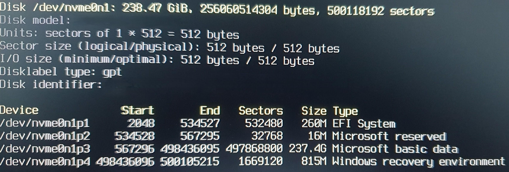

A small project where I installed Arch Linux on my laptop.
My Linux Laptop
Why did I do this? Basically, no reason. I saw a video showcasing Arch Linux, and I thought to myself, I want that, so here we are.
Did I know anything about Linux before this? Practically no.
What did I learn by doing this? Crucial Linux skills and patience.
28th April 2025
I started by going to the Arch Linux installation guide (https://wiki.archlinux.org/title/Installation_guide) where I started to read the installation process. I got the download file and used balenaEtcher to put it into a spare SSD I had. Now you may be thinking, why did I put it on an SSD? It's because I couldn't find a USB stick in my house.
I inserted the SSD into the laptop, and after tinkering with the boot options, I was greeted with the CLI of Arch Linux. Now, because I was hasty, I didn't read the next step, where it says to check the signature to check if it's malware, so I checked the signature by looking at the SHA256 code on the website and my own, and they were identical. I checked the SHA256 of my installed file by doing "certutil -hashfile /path/to/file SHA256" on my Windows PC, and it worked.
Next, I connected to the wifi using iwd (my laptop does not have a LAN cable port), changed the font using "setfont ter-132b" and then, after doing some other random useless commands, I started partitioning by doing "fdisk -l" to see the disk name. Then, after getting confused by the table the website shows you and getting confused by the Windows partitions that were previously on my laptop, and after asking ChatGPT for even more help, I was able to make the 3 partitions that are needed, the boot, swap and root partitions. At this part of the process, the command "lsblk" became very useful to me so that I can check that I'm doing everything correctly.
After this, I formatted each partition, which was very easy by just using the commands listed on the website. Then I mounted the partitions and turned on swap for the swap partition, which came with some difficulty after ChatGPT tried to tell me to do stuff which I couldn't do yet. After mounting, I installed the bare minimum stuff that the website told me to install with this command "pacstrap -K /mnt base linux linux-firmware" and continued through the guide. Then I made my fstab file like this "genfstab -U /mnt >> /mnt/etc/fstab" and then did "arch-chroot /mnt".
Once I finally reached the chroot part, I thought I was close to finishing. So I continued through the guide and reached step 3.5, where I found out about nano, and I installed it using "pacman -S nano". Before this, I was trying to use nano and vim without having them installed, which obviously caused errors. Then I got to the system boot part, where I had to pick a boot loader. I chose systemd-boot because it looked easier, but I later changed to GRUB. This, however, is where tragedy strikes, as when I was trying to edit a file called arch.conf, instead of doing "nano /path/to/arch.conf" I did "nano > /path/to/arch.conf" which caused the terminal to stop working. I tried pressing Ctrl + c, and I tried to go to a different workspace where it asked for a username and password, which at that time, I had no idea what they were. This left me, at that time, with no choice but to restart.
29th April 2025
It wasn't so bad, though, because I only had to mount the partitions again, something which I didn't realise after a few restarts. I got back to the point where I had to write something in arch.conf, and I did it. Now I wanted to test the boot loader, which caused me to restart again because I once again didn't know my username and password. Around this point I slowly started to catch on that it wasn't a full reset. Now, to get past this issue, I tried to make a user by doing "sudo useradd -m -G wheel -s /bin/bash eduard". Now this didn't work because I did not do " passwd eduard" after I created the user. But I did do "passwd" before creating the user. Then it was at this point, after testing in a different workspace, that if I put root as my user and then the password, it let me in.
Now I was done... with the installation. I wanted cool stuff like a GUI and whatnot, so from another video I saw some things I should install for my GUI. This included the following: i3, kitty, dunst, feh, lxappearance, flameshot, rose-pine-gtk, picom, n^3 and redshift. At this point in time, I had absolutely no clue what a window manager or display manager was, so I was just following ChatGPT closely. So I installed all of them separately by doing "pacman -S i3". Later, I found out you can do "pacman -S i3 feh picom.....". Now, one issue was that I was installing all of this stuff still as the root user, which at that time, once again, I did not know could possibly be harmful.
Here, I also had another issue, which heavily confused me. I would run commands like sudo and pacstrap, and it wouldn't recognise the commands. The reason this was happening is because I was not connected to the wifi which would usually not be an issue because I would count on my SSD to keep things like iwd installed. However I had unplugged my SSD thinking I was ready to go and after a reboot everything stopped working. This brings us to once again another reset.
I was getting pretty good at this point at the installation part, and I understood that I didn't actually lose much after a reset. So after completing this I installed ly because it's very simplistic and I like how it looks. After possibly 2 resets, I don't remember, I get frustrated with the wifi issues and find the very simple temporary solution of installing iwd. This means I can connect to the internet even if my SSD is unplugged and I have no connection.
Then I quickly installed yay. After this I try to set up i3 with all the other stuff I installed but when I tried to log into i3 it gave me an error so I gave up for the day.
30th April 2025
Now, before starting doing stuff on my laptop, I was scrolling on YouTube and I found an incredible tutorial on how to install Arch Linux (https://www.youtube.com/watch?v=68z11VAYMS8&list=LL&index=2). That's when I decided to wipe all of my work and start again to make sure that I install everything properly. Now keep in mind, before this point, all I was doing to install all the stuff I did was a mix of the Arch Linux wiki's and installation guides and ChatGPT, so when I followed this tutorial, it was like a breath of fresh air. I followed this tutorial exactly and it all went smoothly except for some points where I had to restart because I put too little memory in the boot partition and it took me some time to configure GRUB correctly. Now my issue with GRUB is that I tried to run this command "grub-install /dev/mydisk" but it gave me an error so ChatGPT told me to run this command "grub-install --target=x86_64-efi --efi-directory=/boot --bootloader-id=GRUB" and it worked.
9th May 2025 and onwards
From now on it will be more brief as I'm writing this much further in the future and have limited notes.
After completing the tutorial, it was time to install some more stuff. I started with pipewire so that I could have functioning audio and got many other apps, including dunst. Now I was still suffering from my issue with the wifi not connecting so I sued nmtui to partially fix it. Later I found out that my issue is that my ipv4 is not automatically configuring which I fixed my later by just putting a line of code (sudo dhclient wlo1) in my startup script.
At around this point, I had decided I wanted to use hyprland because it looked cool, and began the process of installing hyprland. At the time, I didn't really understand which apps were compatible with hyprland and which ones were compatible with i3. I had to install many apps and uninstall many more, but eventually I managed to set up hyprland with waybar, a background picture with some very mediocre pricing.
When it was all done and working, using Arch Linux with Hyprland is incredibly satisfying and quite a rewarding process to reach. I heavily enjoyed the customisation of everything and the fact that you have 0 bloatware and ads and whatnot. The only real issue that I faced and never fixed was the fact that I couldn't screen share on Discord but I never used discord on my laptop. Now, the reason I was speaking in past tense is because sadly I had to get rid of Arch for university, as maintaining Arch and also doing university work was just not worth the effort. Instead, I installed Windows 11 and made sure to install it with the least amount of bloat possible.
Will I install Arch Linux again in the future? Probably, but I'll also probably not and find another cool distro to use
Was installing Arch worth it? At least for me, definitely, because even with all the issues standing in my way, it was very enjoyable and incredibly informative on how Linux works, and it was super satisfying and efficient to use Hyprland.
Here's the only picture I can find, which just shows you my partitions before I fully wiped Windows off my laptop
